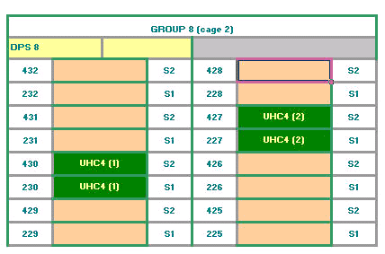

DC Scale UHC4 / UHC4T card
| UHC4T | Supported V93000 systems : EXA Scale (SmarTest 7+8), Smart Scale (SmarTest 7+8) |
| UHC4 | Supported V93000 systems : Smart Scale (SmarTest 7), Pin Scale |
Functionality and features
The DC Scale Ultra High Current 4 (UHC4 / UHC4T) power supply card has 4 channels per card that provide a maximum current of 40 A each (160 A per card). The UHC4 / UHC4T has two power modes of operation: a High Power mode with a maximum current capability of 40 A, and a Precision mode with a maximum current capability of 1.5 A, but with a higher current measurement accuracy.
Any number of UHC4 DPS channels can be ganged together.
The DC Scale UHC4 / UHC4T power supply card can be installed in any pair of adjacent S1/S2 pogo locations, but Advantest recommends to install the first two UHC4 / UHC4T cards in group 8 as shown in the figure below.

Recommendations for use
The DC Scale UHC4 / UHC4T card is designed for high currents and fast load response. The most important point to get the best performance of the card and for safe handling is the suitable and correct design of the DUT board.
Functional changes
- Introduced in SmarTest 6.5.0
- SmarTest 7.3.2: Support of UHC4T